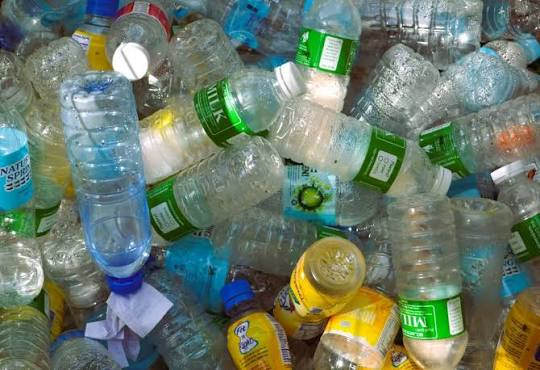
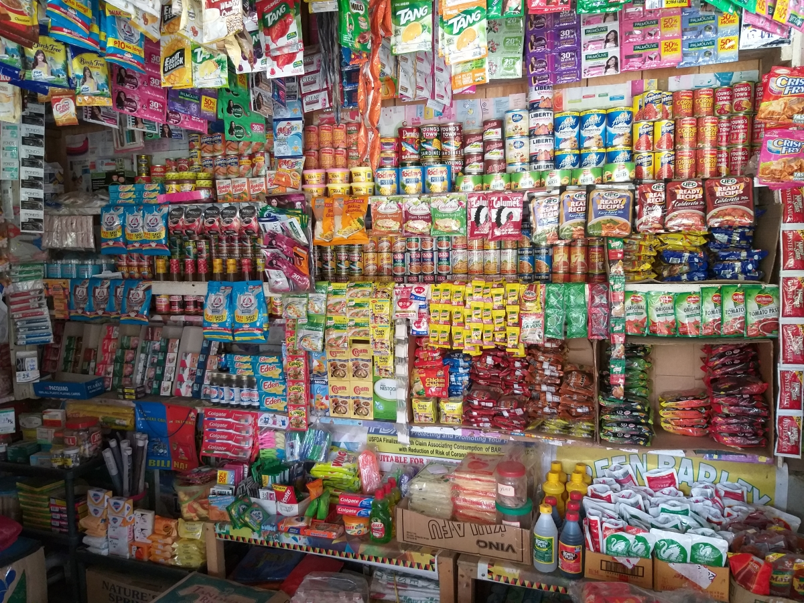

People & Earth's Ecosystem Academic Presentation
THE PLASTIC WE THROW AWAY


THE PLASTIC WE THROW AWAY
NEVER TRULY GOES AWAY
Exploring the Global Plastic & Microplastic Crisis through the Philippines. Plastic is deeply intertwined with daily Filipino life—from sachet culture to takeout delivery. But where does it go after disposal?
Everyday Consumer Plastics → Environmental Dispersal

PET Bottled Beverage Packaging

Multi-layer Sachet Packaging
Single-Use Shopping Bags & Utensils
Philippine Shoreline Accumulation